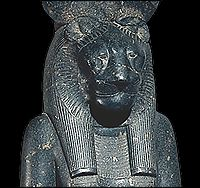

|
Why do some gods and goddesses have animal heads?
Some gods and goddesses were identified with particular animals. There was often a connection between the god or goddess and the actions of the animal. For example, the goddess of war, named Sekhmet was sometimes shown with the head of a lioness to show that she was ferocious.

|